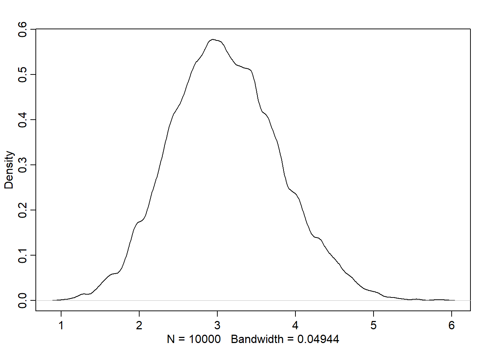

Code
library(rethinking)
library(dagitty)
library(tidyverse)library(rethinking)
library(dagitty)
library(tidyverse)Short description of metropolis hastings:
If we were on island 3 and proposed island 2, the probability of staying should be higher (2/3). If we want the prob of leaving, we have 1 minus that, or 1/3. Thus, odds of 1 to 2 (\(\frac{p}{1-p}\)), so we have 2 stones and 1 shell in the bag.
I’m honestly not a fan of this explanation.
Here is a little sim:
num_weeks <- 1e5
positions <- rep(0, num_weeks)
current <- 10
for (i in 1:num_weeks){
positions[i] <- current
proposal <- current + sample(c(-1,1), size=1)
if (proposal < 1) proposal <- 10
if (proposal > 10) proposal <- 1
prob_move <- proposal/current
current <- ifelse(runif(1) < prob_move, proposal, current)
}
table(positions) |> plot()Notice that we don’t need to know the entire population of islands. Just the current and proposal. This is the beauty of mcmc.
One of the key elements for Metropolis is the symmetric proposal. Meaning that there is an equal chance of proposing A to B as B to A. Whether we transition between states or stay is of course a different story.
Now, Metropolis is just the general algorithm that requires symmetric proposals. There is the Metropolis Hastings algorithm which does not require symmetry. This is helpful for parameters like standard deviations where we can’t go below zero.
Gibbs sampling is a special case of Metropolis Hastings, where we make adaptive proposals. Meaning that our proposals change depending on where we are in the distribution. One drawback of Gibbs is that we have to have conjugate priors. They also get stuck in high dimensional spaces since parameter spaces with many dimensions tend to have regions with high correlation.
One universal truth is that any MCMC approach that samples individual parameters in individual steps will get stuck once the number of params. grows sufficiently large.
One reason for this is that as we have higher dimension parameter spaces, the probability mass doesn’t concentrate around the mode of the parameter space. We could see this with a simple 10 dimension gaussian. Let’s draw some random samples from the distribution and see how far they are from the mode - should be at the origin:
D <- 10
Y <- rmvnorm(1e4, rep(0,D), diag(D))
Rd <- Y |> apply(1, \(x) sqrt(sum(x^2)))
dens(Rd)
This is why we need samplers that focus on the entire distribution.
We have another king. His kingdom is in a valley running north/south where population is inversely proportional to elevation. Here is his (HMC) algorithm for choosing where to visit. Notice how we are not restricted for visiting only neighboring states.
Notice how we wouldn’t have been able to use this for the discrete island approach.
Let’s do a toy model to help. Assume that we have 100 \(x\) and 100 \(y\) values, all sampled from Normal(0,1). We’ll use the following model:
\[\begin{align} x_i &\sim \text{Normal}(\mu_x, 1) \\ y_i &\sim \text{Normal}(\mu_y, 1) \\ \mu_x &\sim \text{Normal}(0, 0.5) \\ \mu_y &\sim \text{Normal}(0, 0.5) \end{align}\]
HMC requires two functions: a log posterior to tell us our “elevation” and the gradient to let us know the steepness of the mountain. As well as two settings: the number of leapfrog steps and step size.
We need to provide 5 things to run HMC:
U that returns the negative log-probability of the data at the current positiongrad_U that returns the gradient of the negative log-probabilityLcurrent_qU <- function(q, a=0, b=1, k=0, d=1){
muy <- q[1]; mux <- q[2]
U <- sum(dnorm(y, muy, 1, log=T)) + sum(dnorm(x, mux, 1, log=T)) +
dnorm(muy, a, b, log=T) + dnorm(mux, k, d, log=T)
-U
}For the graidents, recall that
\[\frac{\partial \log \text{N}(y|a,b)}{\partial a} = \frac{y - a}{b^2}\]
Therefore:
\[\frac{\partial U}{\partial \mu_x} = \frac{\partial \log\text{N}(x|\mu_x,1)}{\partial \mu_x} + \frac{\partial \log\text{N}(\mu_x|0,0.5)}{\partial \mu_x} = \sum_i \frac{x_i - \mu_x}{1^2} + \frac{0 - \mu_x}{0.5^2}\]
U_grad <- function(q, a=0, b=1, k=0, d=1){
muy <- q[1]; mux <- q[2]
G1 <- sum(y - muy) + (a - muy)/b^2
G2 <- sum(x - mux) + (k - mux)/d^2
c(-G1, -G2)
}
x <- rnorm(50) |> scale() |> as.numeric()
y <- rnorm(50) |> scale() |> as.numeric()library(shape)
Q <- list()
Q$q <- c(-0.1, 0.2)
pr <- 0.5
plot(NULL, ylab='muy', xlab='mux', xlim=c(-pr,pr), ylim=c(-pr,pr))
step <- 0.03
L <- 11 # 0.03/28 for U-turns
n_samples <- 4
path_col <- col.alpha('black', 0.5)
points(Q$q[1], Q$q[2], pch=4)
for (i in 1:n_samples){
Q <- HMC2(U, U_grad, step, L, Q$q)
if (n_samples < 10){
for (j in 1:L){
K0 <- sum(Q$ptraj[j,]^2)/2 # Kinetic Energy
lines(Q$traj[j:(j+1), 1], Q$traj[j:(j+1), 2], col=path_col, lwd=1+2*K0)
}
points(Q$traj[1:L+1, ], pch=16, col='white', cex=0.35)
Arrows(Q$traj[L,1], Q$traj[L,2], Q$traj[L+1, 1], Q$traj[L+1, 2],
arr.length = 0.35, arr.adj = 0.7)
text(Q$traj[L+1, 1], Q$traj[L+1, 2], i, cex=0.8, pos=4, offset=0.4)
}
points(Q$traj[L+1, 1], Q$traj[L+1, 2], pch=ifelse(Q$accept==1, 16,1),
col=ifelse(abs(Q$dH) > 0.1, 'red', 'black'))
}
Let’s take a closer look at the HMC2 function:
HMC2_copy <- function(U, U_grad, epsilon, L, current_q){
q <- current_q
p <- rnorm(length(q), 0, 1) # random momentum
current_p <- p
# Make a half step for momentum
p <- p - epsilon * U_grad(q)/2
qtraj <- matrix(NA, nrow=L+1, ncol=length(q))
ptraj <- qtraj
qtraj[1,] <- current_q
p_traj[1,] <- p
# Now we need to do our leapfrog steps
for (i in 1:L){
q <- q + epsilon * p # Full step for the position
# Make a full step for the momentum, except for at the end of trajectory
if (i != L){
p <- p - epsilon * grad_U(q)
ptraj[i+1,] <- p
}
qtraj[i+1, ] <- q
}
# Make half step for momentum at the end
p <- p - epsilon * grad_U(q)/2
ptraj[L+1,] <- p
# Negate the momentum at end of traj to make proposal symmetric
p <- -p
# Evaluate potential and kinetic energies at start and end of traj
current_U <- U(current_q)
current_K <- sum(current_p^2)/2
proposed_U <- U(q)
proposed_K <- sum(p^2)/2
accept <- 0
if(runif(1) < exp(current_U - proposed_U + current_K - proposed_K)){
new_q <- q # accept
accept <- 1
}
else new_q <- current_q # reject
list(q=new_q, traj=qtraj, ptraj=ptraj, accept=accept)
}Notice how we check if we should accept or reject at the end. This is to see if the energy at the end of the trajectory is significantly different than where it was at the beginning. If this is the case, we have a divergent transition and must reject.
Remember that HMC is not magic - we can’t sample discrete parameter spaces. But, we can get around that by marginalizing out the discrete parameters when we sample.